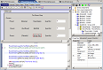

Jigloo SWT/Swing GUI Builder for
Eclipse and WebSphere
Jigloo SWT/Swing GUI Builder for
Eclipse and WebSphere
|  |
Introduction
Note: Jigloo is free for non-commercial use, but purchase of a Professional License is required for commercial use (after successfully evaluating Jigloo).CloudGarden's Jigloo GUI Builder is a plugin for the Eclipse Java IDE and WebSphere Studio, which allows you to build and manage both Swing and SWT GUI classes.
Jigloo
creates and
manages code
for
all the parts of Swing or SWT GUIs as well as
code to handle events, and shows you the GUIs as
they are being built. Jigloo parses java class files to
construct the form that you use when
designing your GUI (round-tripping), so it can work on classes
that were generated by
other GUI builders or IDEs, or hand-coded classes. It can also convert
from a Swing GUI to a SWT GUI and vice-versa.
Jigloo
is straightforward, fast, powerful, easy
to use and fully integrated with Eclipse. It can lead to
substantial time-savings for GUI
development and maintainance tasks.
Jigloo is highly-customizable: the parts of your code which
Jigloo will
parse can be restricted, and the classes which are instantiated when
Jigloo parses your code and constructs the Form editor can be specified
using patterns. The code generated by Jigloo can also be customized,
and existing code can be re-arranged to follow the preferred style (eg,
using getters for GUI elements, or separating elements by blank lines,
braces or tagged comments).
Components are added, layouts changed etc, by selecting from a palette, or by options in the right-click context menus. They can be resized and dragged about in the form editor and in the outline view, and their properties, layout constraints and event handlers can be changed easily in a properties editor. Multi-selection of components makes widespread changes easy to perform. Class-changing (eg, from a Composite to a Group, a combo-box to a text field, or to any custom class) can also save design time. The GUI can be "previewed" or run using editor actions.
A
basic knowledge of the Swing and SWT
components is useful, but not essential - and the javadoc can be easily
accessed (by a right-click option) directly from the GUI editor.
Where
does the name "Jigloo" come from?
1) Jigloo = Jig + gloo - because a jig is used to
hold pieces together while being assembled - with glue, or
2) Jigloo = J + igloo - because if you can't think of anything
better, then start your Java project with a J, and an igloo is a cool
building.